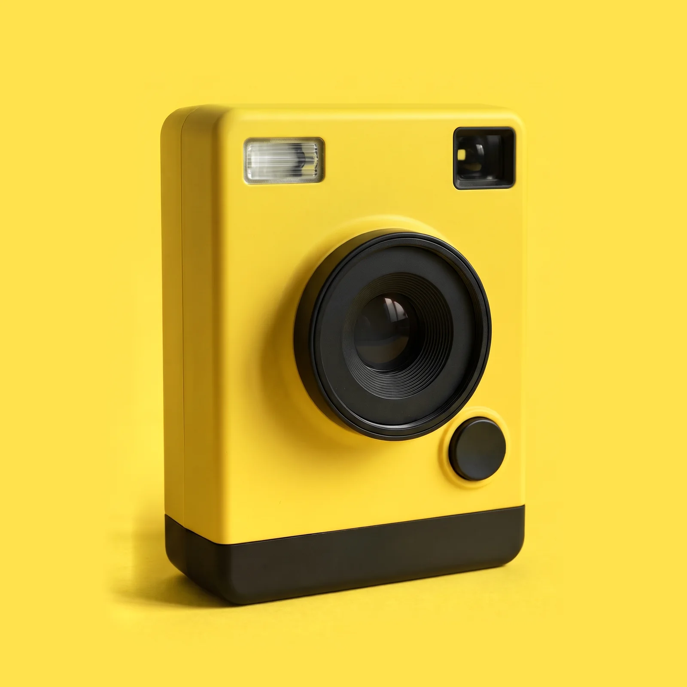
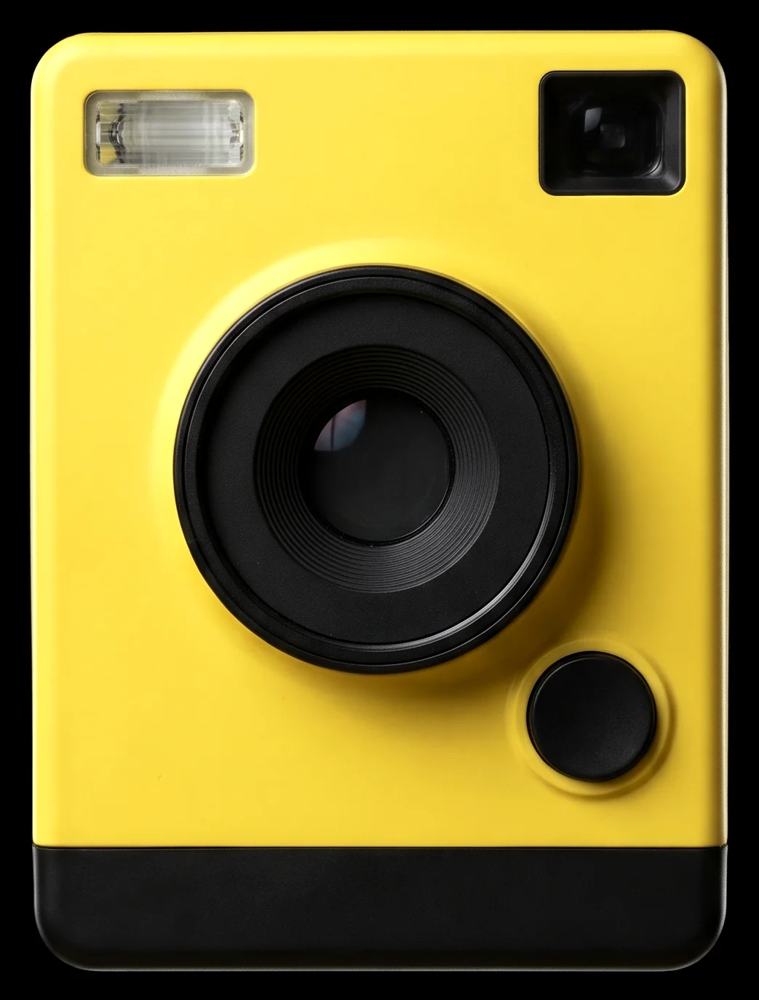
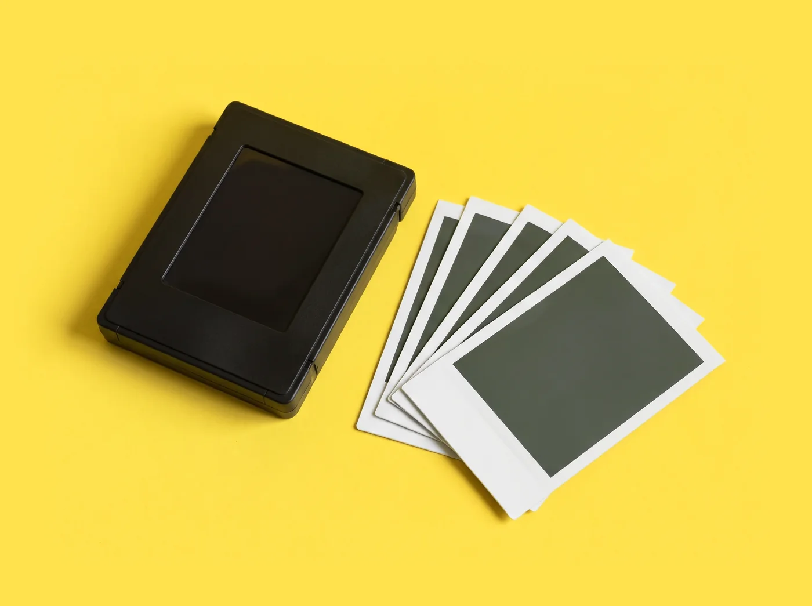
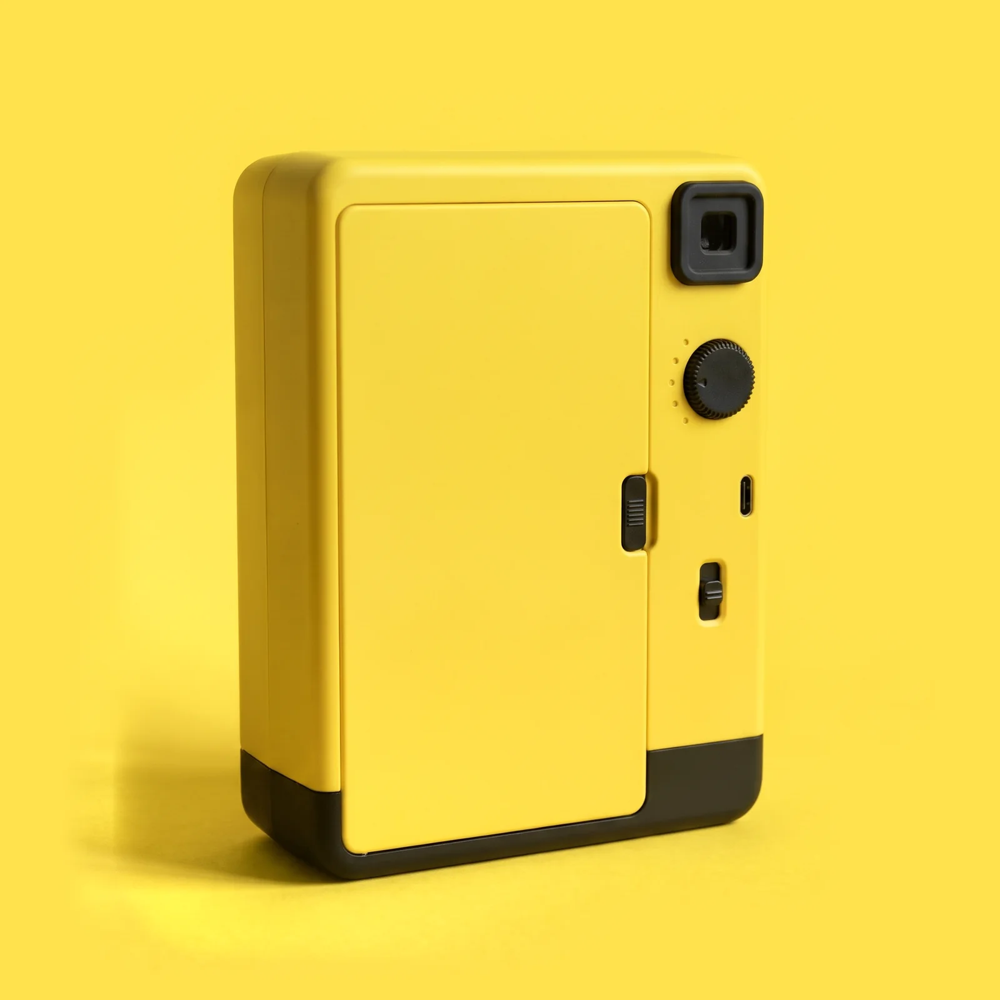
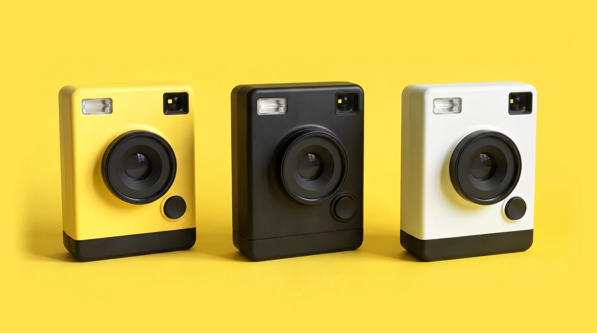

방금 1, 즉석 카메라

즉석 카메라 방금 1
누르면 1초 만에 아래로 한 장이 나오고, 90초면 방금 본 것이 나타납니다. 화면도 메뉴도 없이 셔터 하나라서, 생일상 건너편 할머니에게 건네도 설명 한마디 없이 바로 찍습니다.
- 카메라
- 189,000원첫 필름 10장이 들어 있습니다
- 필름 10장
- 13,000원한 장에 1,300원, 세 팩 묶음이면 1,200원
- 출시
- 12월 3일12월 2일까지 예약하면 3일부터 차례로 보냅니다
눌러 보세요
셔터를 누르면 플래시가 터지고 1초 뒤 아래로 한 장이 나옵니다. 처음엔 회녹색으로 캄캄하다가, 형체부터 천천히 올라옵니다.
실제로는 형체가 보이기까지 90초, 색이 다 차기까지 5분쯤 걸립니다. 여기서는 8초로 줄였습니다.
남은 필름 10장 아직 찍지 않았습니다

방금 찍은 것
한 장에 1,200원부터
방금 필름은 10장이 한 팩입니다. 필름을 넣으면 검은 덮개가 먼저 나오고, 그다음부터 10장을 찍습니다.
| 필름 | 값 | 한 장에 |
|---|---|---|
| 컬러 10장 | 13,000원 | 1,300원 |
| 컬러 30장 세 팩 묶음 | 36,000원 | 1,200원 |
| 흑백 10장 | 15,000원 | 1,500원 |

버튼은 셔터 하나
앞에는 셔터 하나, 뒤에는 다이얼 하나와 스위치 하나. 빛과 셔터 속도는 카메라가 알아서 맞춥니다.

- 초점은 두 칸
- 뒷면 스위치로 가까이(0.3~1 m)와 멀리(1 m부터)를 고릅니다. 케이크, 꽃, 졸고 있는 고양이처럼 가까운 것은 앞 칸입니다.
- 밝기 다이얼
- 점 다섯 개, 가운데가 그대로입니다. 위로 두 칸 밝게, 아래로 두 칸 어둡게. 눈밭이나 바닷가에서는 아래로 한 칸.
- 플래시는 늘
- 찍을 때마다 터지고, 밝은 곳에서는 저절로 약해집니다. 다시 차는 데 2초가 걸립니다.
- 파인더
- 눈을 대고 보는 유리 창입니다. 렌즈보다 조금 위에 있어서, 1 m 안쪽은 보이는 것보다 조금 아래가 찍힙니다.
- 필름 문
- 뒷면 대부분이 문입니다. 오른쪽 걸쇠를 밀어 열고 팩을 넣은 뒤 닫으면 끝.
- 충전
- 뒷면 USB-C로 2시간. 한 번 채우면 필름 10팩, 100장을 찍습니다.
세 가지 색
값은 모두 189,000원. 아래 띠는 셋 다 검정이라 손때가 덜 탑니다.

사양
- 형식
- 즉석 필름 카메라
- 필름
- 방금 필름 (76 × 102 mm, 한 팩 10장)
- 화면 크기
- 66 × 82 mm
- 렌즈
- 60 mm f/11, 플라스틱 렌즈 2매
- 초점
- 두 칸 (0.3~1 m, 1 m부터 끝까지)
- 셔터
- 전자식 1/2~1/320초
- 노출
- 자동, 밝기 다이얼 다섯 칸 (가운데에서 두 칸씩 밝게, 어둡게)
- 플래시
- 자동, 다시 차는 데 2초
- 파인더
- 광학식, 0.4배
- 전원
- 내장 배터리, USB-C 충전 2시간, 100장
- 크기
- 100 × 142 × 62 mm
- 무게
- 420 g (필름 빼고)
- 색
- 레몬, 먹, 흰
- 상자 안
- 카메라, 손목끈, USB-C 줄, 방금 필름 컬러 10장
- 무상 수리
- 산 날부터 2년
사는 곳
방금 상점
단숨시 번개골목 9, 1층
가상 서비스입니다. 실제 주소가 아닙니다.
화요일부터 토요일까지 11시~20시, 일요일은 18시까지, 월요일은 쉽니다. 세 가지 색을 모두 손에 쥐어 보고, 필름 한 장을 직접 찍어 가져갈 수 있습니다.
필름은
방금 상점과 온라인, 그리고 단숨시의 동네 사진관 스물두 곳에서 팝니다. 수리도 방금 상점에서 받습니다.
묻는 것
다른 즉석 필름도 들어가나요?
아니요. 방금 1은 방금 필름(76 × 102 mm)만 씁니다. 크기가 달라 다른 즉석 필름은 들어가지 않습니다.
찍은 사진을 휴대폰에 남길 수 있나요?
카메라에는 화면도 메모리도 없습니다. 남기고 싶은 사진은 다 나타난 뒤 휴대폰으로 한 번 더 찍어 두세요.
사진이 너무 하얗게 나와요.
눈밭, 바닷가, 한낮의 옥상처럼 아주 밝은 곳에서는 뒷면 다이얼을 어둡게 쪽으로 한 칸 돌리세요. 실내에서 너무 어두우면 밝게 쪽으로 돌립니다.
추운 날에도 찍을 수 있나요?
찍을 수 있지만 10도 아래에서는 현상이 느리고 푸르게 나옵니다. 나온 사진을 바로 안주머니에 넣어 체온으로 데워 주세요.
필름은 얼마나 두고 쓸 수 있나요?
만든 날부터 18개월입니다. 해가 들지 않는 서늘한 곳에 두세요. 냉장고에 넣었다면 꺼내서 한 시간 뒤에 씁니다.
필름을 넣었는데 검은 종이가 나왔어요.
정상입니다. 팩 맨 앞의 검은 덮개가 빛을 막고 있다가, 필름 문을 닫으면 먼저 나옵니다. 그다음 10장을 찍습니다.
고장 나면 어디로 가나요?
산 날부터 2년 동안 방금 상점에서 무상으로 고칩니다. 떨어뜨리거나 물에 빠뜨린 것은 부품값만 받습니다.